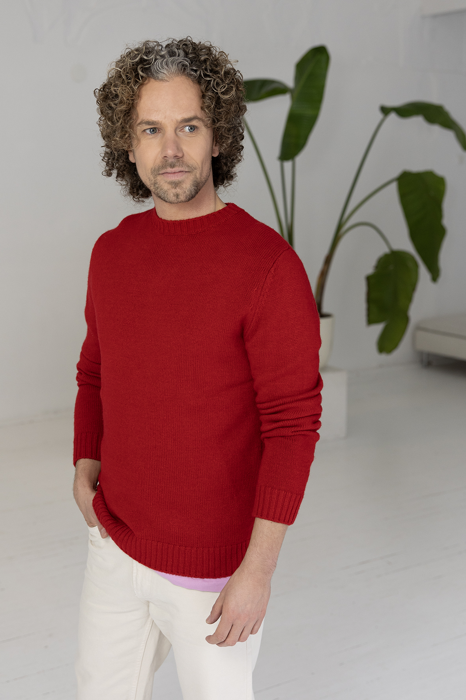

Waarom ik jou
als geen ander begrijp
Jaren terug volgde ik het pad waarvan ik dacht dat het goed voor me was. Het pad dat zo hoort. Dat van me werd verwacht.
Als oudste zoon in een gezin van vier voelde ik al van jongsafaan de druk om het te moeten maken. Een verantwoordelijkheid die ik mezelf jarenlang oplegde, zonder te beseffen hoe zwaar die last was. Ik wilde bewijzen dat ik er toe deed.
Na mijn bachelor Communication & Marketing was ik trots, maar stelde ik mezelf meteen het volgende doel: marketing manager worden. Een paar jaar later was het zover. Managementteam, leaseauto, goed salaris, fijne relatie. Een periode waar ik met plezier op terugkijk, maar ook met een bitterzoete nasmaak.
Op papier had ik het voor elkaar. Dat hoorde ik anderen ook vaak zeggen. Een tijdlang geloofde ik het zelf ook. Maar ik voelde het niet.
Ik werkte hard. Maakte veel uren. Ging over mijn grenzen. Paste me aan en bleef me aanpassen. Want zo hoorde het toch. Totdat het begon te wringen. Te knagen. Ik raakte uitgeput. En juist de dingen in het leven die er écht toe doen, kon ik minder aandacht en energie geven. Voor vriendschappen had ik minder tijd. Mijn relatie leed eronder. Ik zocht afleiding om de leegte en de druk kwijt te raken. En uiteindelijk zat ik volledig opgebrand thuis.
Dit was het moment dat ik besefte dat het anders moest.
Ik realiseerde me dat ik mezelf jarenlang had geïdentificeerd met een functietitel. Die titel gaf me een soort bestaansrecht. Een bevestiging dat ik er toe deed. Terwijl ik diep van binnen al die tijd voelde dat het niet klopte. Dat ik mezelf kwijt was geraakt. Deze periode ligt nu ver achter me, maar is de bron geworden voor de persoon wie ik nu ben en waarvoor ik nu sta in het leven.
In de jaren heb ik veel tijd en aandacht gestopt in mijn eigen persoonlijke ontwikkeling. Belemmerende patronen doorbroken. Begrepen waarom ik deed wat ik deed. Ik begon me af te vragen wat de rode draad in mijn leven is, wat me drijft, wat me energie geeft, waar ik écht van aanga. Het antwoord was verrassend simpel: de mens en persoonlijke ontwikkeling. Al op jonge leeftijd was ik gefascineerd door psychologie en het gedrag van de mens. Mijn boekenkast stond er vol mee. Ik had blijkbaar deze ervaring nodig om te zien wat er altijd al was.
Ik maakte een carrièreswitch en startte de studie Coach Pracitioner aan De Baak. Wat ik daarna in mijn 1-op-1 sessies al snel ontdekte: elk mens wil gezien en gehoord worden. Dat is de kern van wie we zijn. De uitdaging is alleen om zo dicht mogelijk bij jezelf te blijven in plaats van jezelf te verliezen in erkenning en waardering van anderen. En wanneer je de juiste vragen durft te stellen, houdt je verbinding met jezelf en opent dit de deur naar groei.
Daarna heb ik jarenlang gewerkt als trainer op het gebied van teamontwikkeling, leiderschap en vitaliteit en heb ik bij mogen dragen aan de ontwikkeling van teams en het individu binnen het bedrijfsleven.
Al deze inzichten, gecombineerd met mijn jarenlange ervaring als trainer en coach, zet ik nu in om jou te helpen jouw doorbraak te maken.
Uiteindelijk geloof ik dat ieder mens diep van binnen voelt wanneer het tijd is om te stoppen met aanpassen en te kiezen voor zijn eigen pad.
Misschien is dat moment
NU voor jou aangebroken...
Voel jij dat dit
jouw moment is?